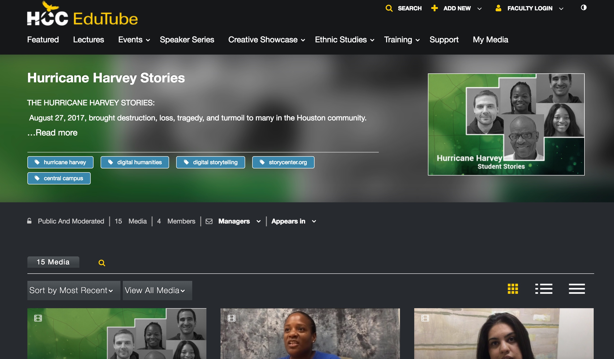
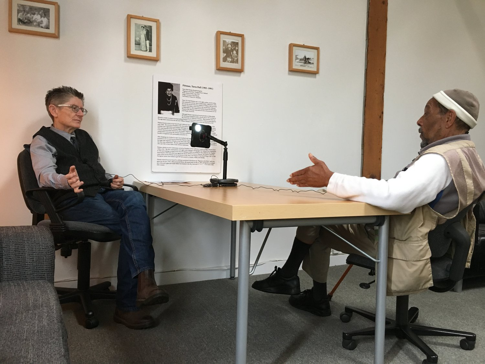

Houston Community College is one of the leading two-year colleges in the United States incorporating digital storytelling into the curriculum while reaching out to the community to achieve the history of the diverse communities with vibrant background that provides such a rich tapestry that makes Houston the city it is today.
Working with the Center for Digital Storytelling we have trained our faculty and staff to incorporate these initiatives into the instructional curriculum.
Digital Storytelling supports projects that bring ideas and insights of the humanities to life for general audiences. Our past projects engage humanities scholarship to analyze significant themes in disciplines such as history, literature, and art history. Our projects support and encourage activities that involve members from the many Houston cultural communities through collaboration with humanities scholars and students. We have also invited contributions from the community in the development and delivery of humanities programming.
These presentations provide video examples of the following initiatives:
Students from a Mexican American history class interviewed veterans from the Korean and Vietnam Wars. The veterans expressed pride in their contributions to the war, some of them for the first time since returning home from their deployments many years ago. Students shared their excitement while developing insight into history through stories not contained in their textbook.
MECA is a community-based non-profit organization committed to the development of under-served youth and adults through arts and cultural programming, academic excellence, support services, and community building. Under the tutorage of library trainers, using staff and equipment resources from our institution, students produced short videos of their interviews with members of their community. This project fostered in the students a better understanding of the significant contributions of their community peers, and it helped them to develop discipline, self-esteem, and increased cultural pride.
Following the disastrous hurricane that stuck Houston in August, 2017, we provided equipment and the opportunity for staff and counselors to capture stories reflecting the impact on individual students of the devastation of the flooding. The objective was both to allow students to tell their stories, as well as to determine whether there were specific actions we could implement to provide support for their continued success in their educational activities. 
Working through the Texas Historical Association and the Houston Historical Alliance we are providing class assignments that include developing short videos and scholarly research on women in the greater Houston community who affected or influenced the history of our region and the state. Based on established guidelines this initiative allows our students to complete the project as a class assignment in history, government or other disciplines. The women include pilots, activists, oil magnates, storytellers, scientists, ranchers, daughters, and mothers who have made significant contribution to the richness of our diverse communities. The digital stories should include notable women, as well as lesser known figures. These videos will be hosted on our Media Space as a reference tool and will be eligible for selection by a peer jury for inclusion in the online Handbook of Texas Women.
The poster session showcases tools from our storytelling arsenal that includes the Listening Stations and iPads displaying referencing videos from our initiatives. All the projects were developed using WeVideo, a collaborative cloud editing application that serves as the online video editor that makes it easy to capture, create, view and share the stories. The stories are shared in Edutube, HCC’s media community tube. The Learning Station was designed as a public kiosk for people to share stories with a listener, hold a conversation, or be part of an interview. The included app automates the upload and delivery of files to participating organizations and the participants. The apps integrates the metadata collection, registration, release and transcription processes, making it a state-of-the-art tool for gathering primary source material for documentary projects.